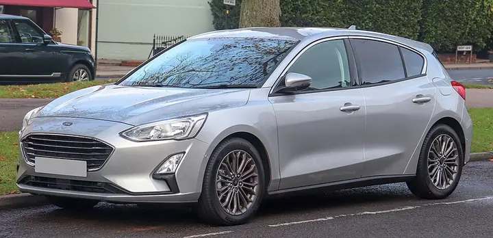
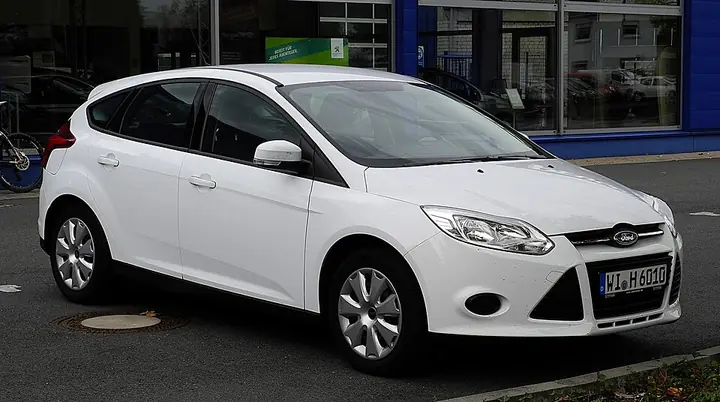
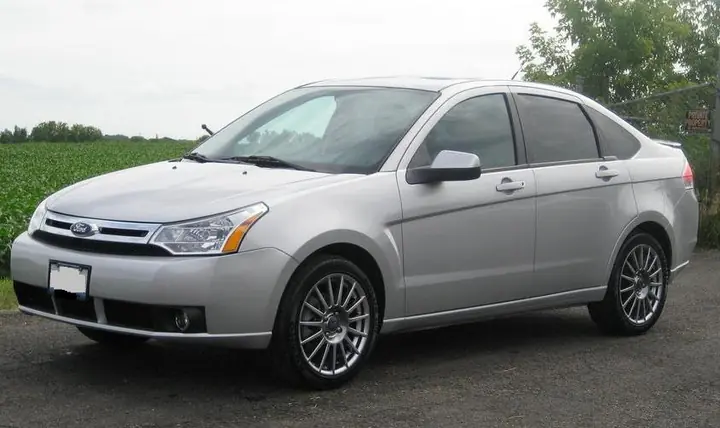
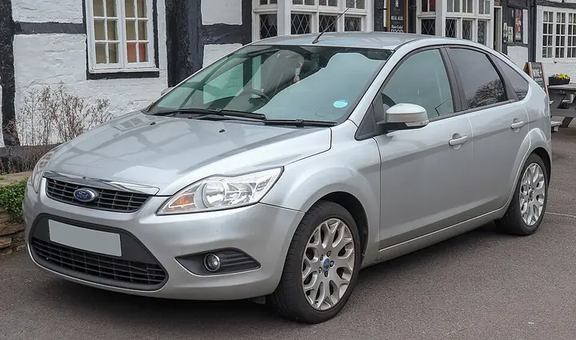
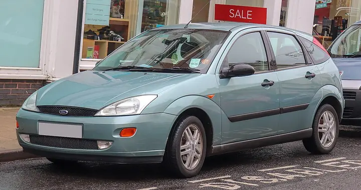

Ford Focus
Fourth generation (C519; 2018) · 2018–2026
Abstract
This generation of the Ford Focus is a compact car/small family car (C), built 2018 – November 2025 (Europe) in Germany: Saarlouis (SB&A), China: Chongqing (Changan Ford); Harbin (Changan Ford, Focus Active), Taiwan: Zhongli (Ford Lio Ho). Body styles: 5-door hatchback, 5-door wagon, 4-door saloon. Layout: Front-engine, front-wheel-drive. Designed by Jordan Demkiw. This generation has its own article: Ford Focus (fourth generation).


1Specifications
| Production | 2018 – November 2025 (Europe)2018–2024 (China)2019–2026 (Taiwan) |
|---|---|
| Assembly | Germany: Saarlouis (SB&A)China: Chongqing (Changan Ford); Harbin (Changan Ford, Focus Active)Taiwan: Zhongli (Ford Lio Ho) |
| Designer | Jordan Demkiw |
| Class | Compact car/small family car (C) |
| Body style | 5-door hatchback5-door wagon4-door saloon |
| Layout | Front-engine, front-wheel-drive |
| Platform | Ford C2 |
| Engine | Petrol:1.0 L EcoBoost (Fox) turbo I31.0 L 'EcoBoost Hybrid Fox mHEV' turbo I31.5 L EcoBoost (Dragon) turbo I31.5 L Ti-VCT I31.5 L EcoBoost turbo I4 (China market)2.3 L EcoBoost turbo I4Diesel:1.5 L EcoBlue (Panther) turbo I42.0 L Duratorq TDCi I42.0 L EcoBlue (Panther) turbo I4 |
| Electric motor | 11.5 kW belt-driven integrated starter/generator (BISG) |
| Transmission | 6-speed manual6-speed automatic (1.5 Ti-VCT only)7-speed 7F40 automatic (ST)8-speed 8F24 automatic8-speed 8F35 automatic7-speed Powershift DCT |
| Battery | 48-volt battery pack |
| Wheelbase | 2700 mm |
| Length | 4378 mm (hatchback)4668 mm (estate)4647 mm (saloon) |
| Width | 1825 mm |
| Height | 1454 mm (hatchback)1481 mm (estate)1483 mm (saloon) |
| Weight | 1235–1518 kg (hatchback)1383–1559 kg (estate)1239–1408 kg (saloon) |
| Related | Ford Escape/KugaFord Bronco SportFord Maverick (2022) |
| Predecessor | Ford Focus (third generation) |
2Versions
- Hatchback
- Estate
- Saloon
- ST-Line
- Vignale
- Active
- ST
- 2022 refresh (facelift)
3Previous generations

_%E2%80%93_Frontansicht,_17._September_2011,_Ratingen.jpg){kind=link}






4Generation by generation
Length +1% from the first to the last
Europe (C307; 2004) 20044,340 mm
North America (C170; 2007) 20074,445 mm
C346 20104,358 mm
C519 20184,378 mm
Weight +0% from the first to the last
Europe (C307; 2004) 20041,229 kg
North America (C170; 2007) 20071,174 kg
C346 20101,270 kg
C519 20181,235 kg